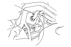
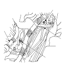
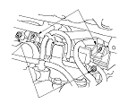
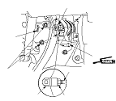

Sustitución del servofreno
Modelo RHD
Extraiga el cilindro maestro.
Extraiga el eje intermedio.
Desmonte el turbocompresor y el colector de escape.
Desconecte el manguito de vacío (A) del servofreno del propio servofreno.

Desmonte el soporte (A) del mazo de cables del motor y el manguito de vacío (B).

Retire la abrazadera (A) del mazo de cables del motor cerca del centro.
Retire las abrazaderas (A) del mazo de cables del motor del lado del acompañante.

Desmonte las tuberías de freno de la abrazadera (A) del lado del conductor.
Desmonte las tuberías de freno de la abrazadera (A) debajo del servofreno.
Desmonte la grupilla (A) y el pasador de unión (B), a continuación, afloje la tuerca (C) y desconecte la horquilla (D) del pedal de freno.
Desmonte las tuercas de fijación del servofreno (E).
Desmonte la horquilla de la varilla del servofreno (F).

Tire del servofreno (A) hacia adelante.
Tenga cuidado de no dañar las superficies del servofreno ni las roscas de sus espárragos durante el montaje.
Tenga cuidado de no doblar o dañar las tuberías de freno u otros componentes de manguitos y tuberías.
Mueva el servofreno hacia abajo con un giro y extráigalo del compartimento del motor.
Monte el servofreno siguiendo el proceso inverso al de desmontaje y tenga en cuenta lo siguiente:
Utilice siempre un pasador de bloqueo nuevo.
Monte el cilindro maestro luego de colocar el servofreno.
Compruebe la altura y el juego libre del pedal del freno después de montar el cilindro maestro y proceda a su ajuste si resulta necesario.
Purgue el sistema de frenos.